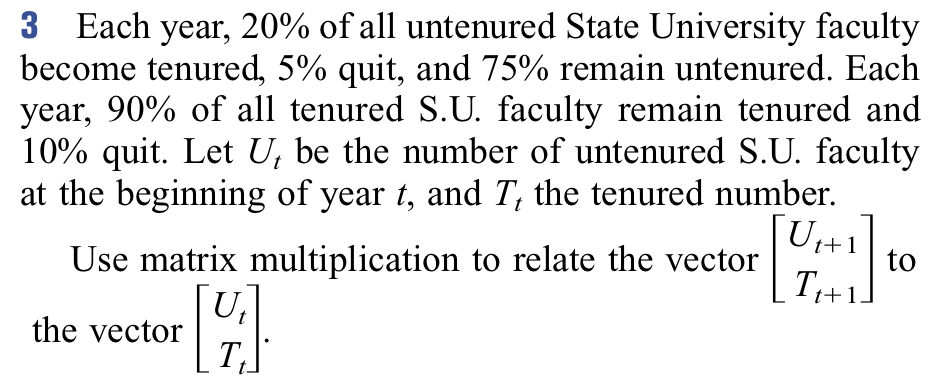

Linear Systems : Matrices, Vectors, eigen systems#
In this module we will learn how to solve linear systems which are very common in engineering and applied physics.
Applications are numerous:
Civil, chemical, electrical, mechanical, …, engineering
In biology by using linear algebra to analyze huge data sets regarding protein folding. https://math.stackexchange.com/questions/571109/any-application-of-vector-spaces-in-biology-or-biotechnology
In genetics to model the evolution of genes.
Markov chains on industrial processes with applications of matrices and eigen systems.
Population dynamics.
Perception of colors.
Adjacency graphs: https://en.wikipedia.org/wiki/Adjacency_matrix , https://towardsdatascience.com/matrices-are-graphs-c9034f79cfd8
Why is linear algebra useful? https://www.youtube.com/watch?v=X0HXnHKPXSo
One particular common operation, the matrix multiplication, is still the subject of ongoing research:

https://www.quantamagazine.org/mathematicians-inch-closer-to-matrix-multiplication-goal-20210323/
https://www.quantamagazine.org/ai-reveals-new-possibilities-in-matrix-multiplication-20221123/
Tips about matrix computing:
https://nhigham.com/2022/10/11/seven-sins-of-numerical-linear-algebra/
http://gregorygundersen.com/blog/2020/12/09/matrix-inversion/
https://gamemath.com/book/intro.html
https://docs.godotengine.org/en/stable/tutorials/math/vector_math.html
https://www.youtube.com/watch?v=fDAPJ7rvcUw
Furthermore, for eigen values, please check https://www.youtube.com/watch?v=PFDu9oVAE-g&t=0s
Eigen c++#
Eigen is a C++ template library for linear algebra: matrices, vectors, numerical solvers, and related algorithms.
http://eigen.tuxfamily.org/index.php?title=Main_Page
http://eigen.tuxfamily.org/dox/GettingStarted.html
Quick reference: https://eigen.tuxfamily.org/dox/group__QuickRefPage.html
Solving \(Ax = b\)#
This is one of the archetypical problems in numerical algebra. You migh try to implement it by hand, but it will probable be not efficient, stable, etc (Remember https://nhigham.com/2022/10/11/seven-sins-of-numerical-linear-algebra/). Better to use a numerical library to do the heavy task for you.
QR decomposition#
In this example we are going to use eigen to solve the system using HouseHolder QR decomposition as done in http://eigen.tuxfamily.org/dox/group__TutorialLinearAlgebra.html . Please create a file with the following code, compile it and run it. You are supposed to have already installed eigen (the computer room and the binder machine both have it).
# include <iostream>
# include <Eigen/Dense>
int main()
{
Eigen::Matrix3d A;
Eigen::Vector3d b;
//std::cout.precision(16);
//std::cout.setf(std::ios::scientific);
A << 1,2,3, 4,5,6, 7,8,10;
b << 3, 3, 4;
std::cout << "Here is the matrix A:\n" << A << std::endl;
std::cout << "Here is the vector b:\n" << b << std::endl;
Eigen::Vector3d x = A.colPivHouseholderQr().solve(b);
std::cout << "The solution is:\n" << x << std::endl;
std::cout << (A*x - b).norm() << "\n";
return 0;
}
If the library is installed on system paths, just compile it as
g++ -std=c++17 qr.cpp -o qr.x
or compile it optimized as
g++ -std=c++17 -O3 qr.cpp -o qr.x
and then run it
./qr.x
What do you get? is the optimized code faster than the original one? why? why not?
Installation and compilation tips#
Try the following:
Library installed at
/usr/include/eigen3or/usr/local/include/eigen3: Then you need to tell the compiler where to find the headersg++ -std=c++17 -O3 -I /usr/include/eigen3 qr.cpp -o qr.x
or, if you installed it on a specific path
g++ -std=c++17 -O3 -I /path/to/installdir/ qr.cpp -o qr.x
Install it : On systems like ubuntu, you could use
sudo apt install libeigen3-dev
In collab,
apt install libeigen3-dev
In the course provisioned binder, you do not need to install, it is already installed.
Exercise#
How to know that the solution is actuallya. solution of the original problem? design a criteria .
Exercise#
Now create a random matrix and vector, of arbitrary size N, and measure the time to compute the solution as a function of N. Use Eigen::MatrixXd A = Eigen::MatrixXd::Random(N, N); and std::chrono
LU decomposition#
THe LU decomposition os another tool we can use to solve the system (advantages? disadvantages?)
Now implement the following solution and compare with the previous one? The only change you need is
Eigen::MatrixXd x = A.fullPivLu().solve(b)
%%writefile lu.cpp
### BEGIN SOLUTION
### END SOLUTION
Writing lu.cpp
Exercises#
Solving simple system#
Solve the system

Performance between QR and LU#
Compare the time between LU and QR decompositions on random matrices.
Solve simple system#
{kind=link}
Simulating temperature#
Temperature discretized

System of equations

Laplace equation in 2D#
When solving the laplace equation \(\nabla V = 0\) to compute the electrostatic potential on a planar region, you can discretize the derivatives on a grid and then arrive to the following equation
This can be written as a matrix problem. Solve the matrix problem for a square plate of lenght \(L\), with \(N\) points on each side. The boundary conditions, of Dirichlet type, are \(V(x, 0) = 5\sin(\pi x/L)\), \(V(x, L) = V(0, y) = V(L, y) = 0.0\).
Vandermonde determinant#
Compute the determinant of the [[https://en.wikipedia.org/wiki/Vandermonde_matrix][Vandermonde matrix]] of size \(N\times N\). Measure the time as a function of \(N\).
Condition number#
Compute the condition number for an arbitrary matrix \(A\). Apply it for the Vandermonde matrix. The condition number is defined as \(\kappa(A) = |A^{-1}| |A|\)
Rotation matrix#
Define a rotation matrix in 2d by an angle \(\theta\). Apply it to a given vector and check that it is actually rotated.
Coupled oscillators#
Imagine that you have two masses \(m_1, m_2\), coupled through springs in the form wall-spring-mass-spring-mass-spring-wall. All spring are linear with constant \(k\). Write the equations of motion, replace each solution with \(x_i(t) = A_i e^{i\omega t}\), and obtain a matrix representation to get the amplitudes. Compute the eigen values and eigen-vectors. Those are the [[https://en.wikipedia.org/wiki/Normal_mode][normal modes]] . Extend to n oscillators of the same mass.
Thick lens (Boas, 3.15.9)#
The next matrix is used when discussing a thick lens in air
where \(d\) is the thickness of the lens, \(n\) is the refraction index, and \(R_1\) and \(R_2\) are the curvature radius. Element \(A_{12}\) is equal to \(-1/f\), where \(f\) is the focal distance. Evaluate \(\det A\) and \(1/f\) as functions of \(n \in [1, 3]\).
Products production#

Teaching distribution#
{kind=link}
Payments#

Eigen vectors and eigen values#
Eigen-values (\(\lambda\)) and eigen-vectors (\(\vec v\)) of a matrix \(A\) fulfill the following equation
and are extensively use in physics, statistics, computational methods, etc (see https://en.wikipedia.org/wiki/Eigenvalues_and_eigenvectors?useskin=vector). For example, they are use to compute (https://en.wikipedia.org/wiki/Eigenvalues_and_eigenvectors?useskin=vector#Applications):
Eigen values of the Schroedinger equation

From: "https://upload.wikimedia.org/wikipedia/commons/c/cf/HAtomOrbitals.png" Diagonalization basis for matrices: Given a matrix \(A\), and the matrix \(P\) whose column vectors are the eigenvectors of \(A\), then one can apply a basis trnasformation, to move to the eigen-vector matrices, and obtain a diagonal matrix \(D\) (whose elements are the eigen values of \(A\)), as
(23)#\[\begin{equation} D = P^{-1}AP \end{equation}\]
From: "https://upload.wikimedia.org/wikipedia/commons/4/4e/Diagonalization_as_rotation.gif" Normal mode of oscillatory systems

From: "https://upload.wikimedia.org/wikipedia/commons/thumb/8/82/Mode_Shape_of_a_Tuning_Fork_at_Eigenfrequency_440.09_Hz.gif/440px-Mode_Shape_of_a_Tuning_Fork_at_Eigenfrequency_440.09_Hz.gif" Principal component analysis in data science

From: "https://upload.wikimedia.org/wikipedia/commons/thumb/1/15/GaussianScatterPCA.png/440px-GaussianScatterPCA.png" Image analysis

From: "https://upload.wikimedia.org/wikipedia/commons/6/67/Eigenfaces.png" Moment of inertia

From: "https://upload.wikimedia.org/wikipedia/commons/thumb/6/6d/Triaxial_Ellipsoid.jpg/440px-Triaxial_Ellipsoid.jpg" Stress tensor principal axis

From: "https://upload.wikimedia.org/wikipedia/commons/thumb/e/e4/Plastic_Protractor_Polarized_05375.jpg/440px-Plastic_Protractor_Polarized_05375.jpg"
Solving a general eigen value problem with eigen c++#
Following the documentation of the general eigen solver, https://eigen.tuxfamily.org/dox/classEigen_1_1EigenSolver.html, we can use the example to show how it works:
#include <iostream>
#include <string>
#include <Eigen/Dense>
#include <complex>
int main(int argc, char **argv) {
const int N = std::stoi(argv[1]);
Eigen::MatrixXd A = Eigen::MatrixXd::Random(N,N);
std::cout << "Here is a random matrix, A:" << std::endl
<< A << std::endl << std::endl;
Eigen::EigenSolver<Eigen::MatrixXd> es(A);
std::cout << "The eigenvalues of A are:" << std::endl
<< es.eigenvalues() << std::endl;
std::cout << "The matrix of eigenvectors, V, is:" << std::endl
<< es.eigenvectors() << std::endl << std::endl;
std::complex<double> lambda = es.eigenvalues()[0];
std::cout << "Consider the first eigenvalue, lambda = " << lambda << std::endl;
Eigen::VectorXcd v = es.eigenvectors().col(0);
std::cout << "If v is the corresponding eigenvector, then lambda * v = " << std::endl
<< lambda * v << std::endl;
std::cout << "... and A * v = " << std::endl
<< A.cast<std::complex<double> >() * v << std::endl << std::endl;
Eigen::MatrixXcd D = es.eigenvalues().asDiagonal();
Eigen::MatrixXcd V = es.eigenvectors();
std::cout << "Finally, V * D * V^(-1) = " << std::endl
<< V * D * V.inverse() << std::endl;
return 0;
}
Please compile and run it. This is a very general example and cam be simplified for specific matrices (hermitian) to improve efficiency.
Exercises for eigen systems#
Eigen values Hilbert matrix#
Compute the eigen values and the condition number for the https://en.wikipedia.org/wiki/Hilbert_matrix.
Power method and eigen values#
Apply the https://en.wikipedia.org/wiki/Power_iteration to compute the maximum eigen value of the Vandermonde matrix (or any other matrix).
Power of a matrix#
Given a matrix \(A\), one can compute easily \(A^k\) using diagonalization: \(A^k = (PDP^{-1})^k = PDP^{-1}PDP^{-1} ... PDP^{-1} = PD^{k}P^{-1}\), where \(D^k\) is just raising the eigen values to the given k power. Implement this in a function that receives an eigen matrix and a power k and returns the corresponding result.
Checking stability (Heath, scientific computing)#
Compute the eigen values of the matrix
Then do it again, but change the 19 to 18.95. What is the relative change in the eigen values magnitudes? Do the same changing it to 19.05. Can you draw any conclusion about this? can you devise a condition number to characterize this?
Markov chain (Heath, Scientific Computing)#
A Markov chain is a representation of a Markov process, which, in turns, is a random process with no memory: the current state depends only on the previous one and no more. The probability of a transition from state j to state i is given by \(a_{ij}\),where \(0 \le a_{ij} \le 1\) and \(\sum_{i=1}^n a_{ij} =1\). Let \(A\) denote the matrix of transition probabilities, and let \(x^{(k)}\) denote the probability that the system is in state \(i\) after transition \(k\). If the initial probability distribution vector is \(x^{(0)}\), then the probability distribution vector after \(k\) steps is given by
Consider the matrix
and suposse the system is initially in state 1.
What is the probability distribution vector after three steps?
What is the long-term value of the probability distribution vector?
Does the long-term value of the probability distribution vector depend on the particular starting value ?
What is the value of \(\lim_{k \to \infty} A^k\) , and what is the rank of this matrix?
Explain your previous results in terms of the eigenvalues and eigenvectors of A
Must 1 always be an eigenvalue of the transition matrix of a Markov chain? Why?
A probability distribution vector x is said to be stationary if Ax = x. How can you determine such a stationary value x using the eigenvalues and eigenvectors of A?
How can you determine a stationary value x without knowledge of the eigenvalues and eigen- vectors of A?
TODO Matrix exponential from taylor expansion#
TODO Normal modes#
Other eigen tools#
http://eigen.tuxfamily.org/dox/group__Sparse__chapter.html
http://eigen.tuxfamily.org/dox/group__Geometry__chapter.html
Eigen arrays: coefficient wise computation#
This library also implements element-wise operations and data structs, https://eigen.tuxfamily.org/dox/group__TutorialArrayClass.html , https://eigen.tuxfamily.org/dox/group__QuickRefPage.html#title6 . There are many overloaded operations that you can use. Plase check the docs.
This is an example of a sum, element-wise
#include <eigen3/Eigen/Dense>
#include <iostream>
int main()
{
Eigen::ArrayXXf a(3,3);
Eigen::ArrayXXf b(3,3);
a << 1,2,3,
4,5,6,
7,8,9;
b << 1,2,3,
1,2,3,
1,2,3;
// Adding two arrays
std::cout << "a + b = " << std::endl << a + b << std::endl << std::endl;
// Subtracting a scalar from an array
std::cout << "a - 2 = " << std::endl << a - 2 << std::endl;
}
and this an example for vector product
#include <eigen3/Eigen/Dense>
#include <iostream>
int main()
{
Eigen::ArrayXXf a(2,2);
Eigen::ArrayXXf b(2,2);
a << 1,2,
3,4;
b << 5,6,
7,8;
std::cout << "a * b = " << std::endl << a * b << std::endl;
}
More operations:
#include <eigen3/Eigen/Dense>
#include <iostream>
int main()
{
Eigen::ArrayXf a = Eigen::ArrayXf::Random(5);
a *= 2;
std::cout << "a =" << std::endl
<< a << std::endl;
std::cout << "a.abs() =" << std::endl
<< a.abs() << std::endl;
std::cout << "a.abs().sqrt() =" << std::endl
<< a.abs().sqrt() << std::endl;
std::cout << "a.min(a.abs().sqrt()) =" << std::endl
<< a.min(a.abs().sqrt()) << std::endl;
}
Exercises#
Filtering data#
Create N=1000 points between 0 and \(2\pi\), then compute the \(\sin\) of those numbers, and finally print only the values that fulfill that \(|\sin x| \le 0.5\). All of this without using loops.
MD simulation#
If you discretize time in steps of size \(\delta t\), and you have the forces on a given ideal particle, you can compute the next position using the Euler algorithm,
Use valarrays to model the vectors. Compute the trayectory of a particle of mass \(m=0.987\), with initial conditions \(\vec R(0) = (0, 0, 4.3), V(0) = (0.123, 0.0, 0.98)\), under the influence of gravity. Plot it. Later add some damping. Later add some interaction with the ground.